第一章 命令行开发
1.1 基础工具安装¶
1.1.1 安装必要库与工具¶
sudo apt-get update
sudo apt-get install build-essential gcc g++ make zlib* libffi-devsudo apt-get install e2fsprogs pkg-config flex bison perl bc openssl libssl-dev libelf-dev libc6-dev-amd64 binutils binutils-dev libdwarf-dev u-boot-tools mtd-utils gcc-arm-linux-gnueabi cpio device-tree-compiler1.1.2 更改python源¶
which python3.8sudo update-alternatives --install /usr/bin/python python /usr/bin/python3.8 1 #/usr/bin/python3.8为上一步查看的Python 3.8的位置
sudo update-alternatives --install /usr/bin/python3 python3 /usr/bin/python3.8 1 #/usr/bin/python3.8为上一步查看的Python 3.8的位置1.1.3 配置华为云为pip的更新源¶
sudo apt install python3-pipmkdir ~/.pip
pip3 config set global.index-url https://mirrors.huaweicloud.com/repository/pypi/simple
pip3 config set global.trusted-host mirrors.huaweicloud.com
pip3 config set global.timeout 1201.2 编译工具安装¶
1.2.1 安装编译和构建工具¶
表1 Hi3861 WLAN模组需要安装的编译工具
| 开发工具 | 用途 |
|---|---|
| SCons3.0.4+ | 编译构建工具 |
| python模块：setuptools、kconfiglib、pycryptodome、six、ecdsa | 编译构建工具 |
| gcc riscv32 | 编译构建工具 |
1.2.2scons¶
python3 -m pip install scons
#添加环境变量
echo 'export PATH=~/.local/bin:$PATH' | tee -a ~/.bashrc
source ~/.bashrc# 验证
scons -v
1.2.3 kconfiglib¶
pip3 install kconfiglib1.2.4 pycryptodome和ecdsa¶
pip3 install pycryptodome ecdsa1.2.5 gcc riscv32¶
下载
wget https://repo.huaweicloud.com/harmonyos/compiler/gcc_riscv32/7.3.0/linux/gcc_riscv32-linux-7.3.0.tar.gz解压到home目录
tar -xvf gcc_riscv32-linux-7.3.0.tar.gz -C ~/删除压缩包
rm gcc_riscv32-linux-7.3.0.tar.gz添加环境变量
echo 'export PATH=~/gcc_riscv32/bin:$PATH' | tee -a ~/.bashrc
source ~/.bashrc1.3 安装Samba服务¶
sudo apt-get install samba
#打开配置文件
sudo nano /etc/samba/smb.conf 将下列信息填入smb.conf的最后一行
[home]
comment = User Homes
path = /home
guest ok = no
writable = yes
browsable = yes
create mask = 0755
directory mask = 0755指定共享账号
sudo smbpasswd -a username #用户名为Ubuntu用户名。输入命令后，根据提示设置密码。sudo service smbd restart1.4 获取源码¶
1.4.1 安装git和git-lfs¶
#更新软件列表
sudo apt-get update
#安装git客户端和git-lfs
sudo apt-get install git git-lfs1.4.2 git用户配置¶
git config --global user.name "yourname"
git config --global user.email "your-email-address"
git config --global credential.helper store1.4.3 安装repo和requests¶
wget https://gitee.com/oschina/repo/raw/fork_flow/repo-py3
sudo mv repo-py3 /usr/local/bin/repo
sudo chmod a+x /usr/local/bin/repopip install requests1.4.4 获取3.0.7LTS版本源码¶
Danger
关于初学者选择源码的标准，据了解先OpenHarmony的轻量系统已基本稳定，3.1之后版本更新多针对于小型系统和标准系统，故无需追求过高的源码，3.0.7为比较高的适合版本。（个人也喜欢新版本所以选择这个版本）
创建源码存放文件夹
mkdir ~/OpenHarmony/3.0.7
cd ~/OpenHarmony/3.0.7获取OpenHarmony-3.0.7-LTS源代码
#使用repo工具-初始化源码仓
repo init -u https://gitee.com/openharmony/manifest.git -b refs/tags/OpenHarmony-v3.0.7-LTS --no-repo-verify
#使用repo工具-同步源码仓
repo sync -c
#使用repo工具-拉取源码仓大型文件
repo forall -c 'git lfs pull'1.5 完善编译环境¶
1.5.1 安装hb¶
在源码根目录打开终端
python3 -m pip install --user build/lite
echo 'export PATH=~/.local/bin:$PATH' | tee -a ~/.bashrc
source ~/.bashrc
hb -h1.5.2 安装gn¶
#建立目录
mkdir -p ~/OpenHarmony/3.0.7/prebuilts/build-tools/linux-x86/bin/
#下载
wget https://repo.huaweicloud.com/harmonyos/compiler/gn/1717/linux/gn-linux-x86-1717.tar.gz
#安装
tar -xvf gn-linux-x86-1717.tar.gz -C ~/OpenHarmony/3.0.7/prebuilts/build-tools/linux-x86/bin/
#删除安装包
rm gn-linux-x86-1717.tar.gz1.5.3 安装ninja¶
#下载
wget https://repo.huaweicloud.com/harmonyos/compiler/ninja/1.10.1/linux/ninja-linux-x86-1.10.1.tar.gz
#安装
tar -xvf ninja-linux-x86-1.10.1.tar.gz -C ~/OpenHarmony/3.0.7/prebuilts/build-tools/linux-x86/bin/
#删除安装包
rm ninja-linux-x86-1.10.1.tar.gz1.6 第一个程序¶
1.6.1 编写程序¶
Vscode打开虚拟机源码
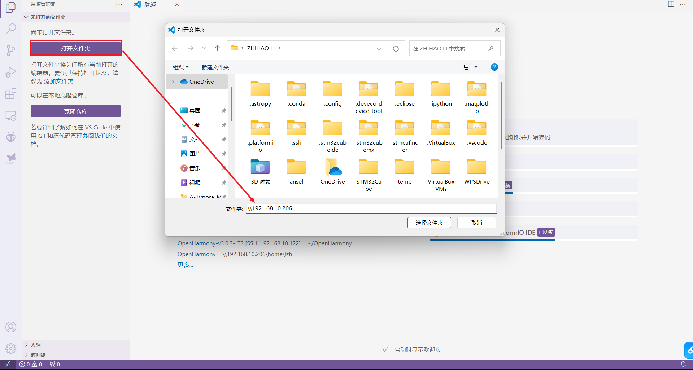
添加vscode的头文件引用，将图中标红处添加即可。
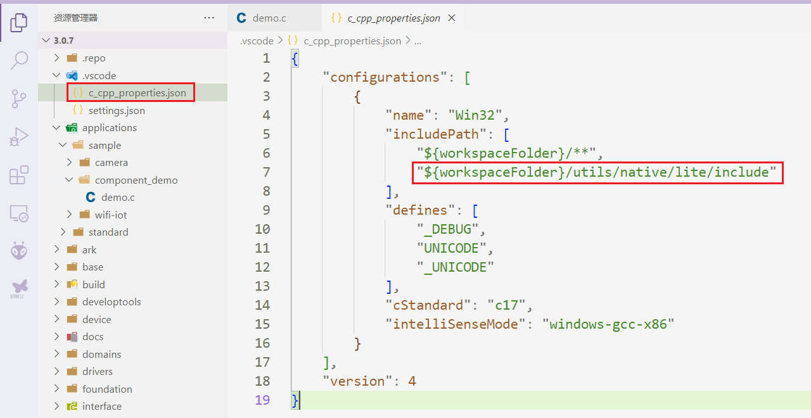
找到目录./applications/sample/wifi-iot/app，在app文件夹下一个文件夹my_first_app，代码文件hello_world.c，编译脚本BUILD.gn。具体目录结构如下：
.
└── applications
└── sample
└── wifi-iot
└── app
└── my_first_app
│── hello_world.c
└── BUILD.gn
Note
官方称呼：新增业务my_first_app，其中hello_world.c为业务代码，BUILD.gn为编译脚本。
在hello_world.c文件中添加代码
#include <stdio.h>
#include "ohos_init.h"
#include "ohos_types.h"
void HelloWorld(void)
{
printf("[DEMO] Hello world.\n");
}
SYS_RUN(HelloWorld);
在编译脚本BUILD.gn中添加编译配置
static_library("myapp") {
sources = [
"hello_world.c"
]
include_dirs = [
"//utils/native/lite/include"
]
}
添加新组件，组件配置文件为build/lite/components/applications.json
Danger
若源码版本大于等于OpenHarmony 3.2 Beta2时，组件配置文件为build/lite/components/communication.json。
{
"components": [
{
"component": "camera_sample_communication",
"description": "Communication related samples.",
"optional": "true",
"dirs": [
"applications/sample/camera/communication"
],
"targets": [
"//applications/sample/camera/communication:sample"
],
"rom": "",
"ram": "",
"output": [],
"adapted_kernel": [ "liteos_a" ],
"features": [],
"deps": {
"components": [],
"third_party": []
}
},
##start##
{
"component": "hello_world_app",
"description": "hello world samples.",
"optional": "true",
"dirs": [
"applications/sample/wifi-iot/app/my_first_app"
],
"targets": [
"//applications/sample/wifi-iot/app/my_first_app:myapp"
],
"rom": "",
"ram": "",
"output": [],
"adapted_kernel": [ "liteos_m" ],
"features": [],
"deps": {
"components": [],
"third_party": []
}
},
##end##
{
"component": "camera_sample_app",
"description": "Camera related samples.",
"optional": "true",
"dirs": [
"applications/sample/camera/launcher",
"applications/sample/camera/cameraApp",
"applications/sample/camera/setting",
"applications/sample/camera/gallery",
"applications/sample/camera/media"
],
修改单板配置文件vendor/hisilicon/hispark_pegasus/config.json，新增hello_world_app组件的条目
{
"subsystem": "applications",
"components": [
##start##
{ "component": "hello_world_app", "features":[] },
##end##
{ "component": "wifi_iot_sample_app", "features":[] }
]
},
Note
这里就跟着修改文件即可，具体关于编译脚本和组件添加问题，会在编译原理章节进一步解释。
1.6.2 编译源码¶
在终端进入源代码的根目录，如下图所示：

选择开发板
hb set需要确认代码目录，我们已经在根目录，回车即可。然后，上下移动选择开发板

编译
hb build，增量编译hb build -f，全量编译
hb build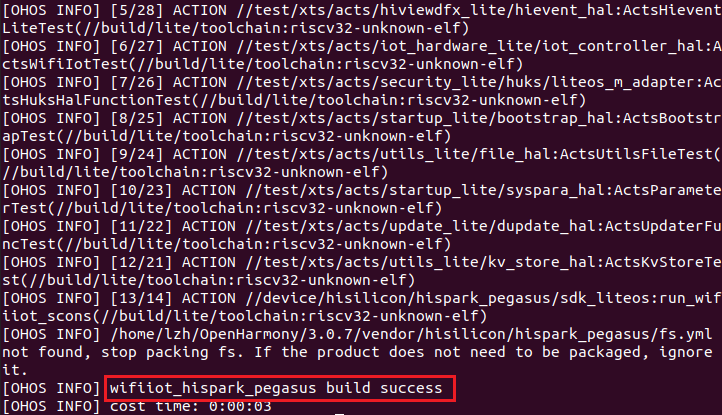
1.6.3 烧录固件¶
windows系统使用hiburn烧录
.bin文件
在windows系统中安装HiBurn软件，HiBurn资源下载
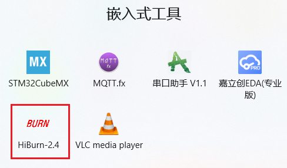
插上开发板，我使用的是"小熊拍-nano"，查看端口
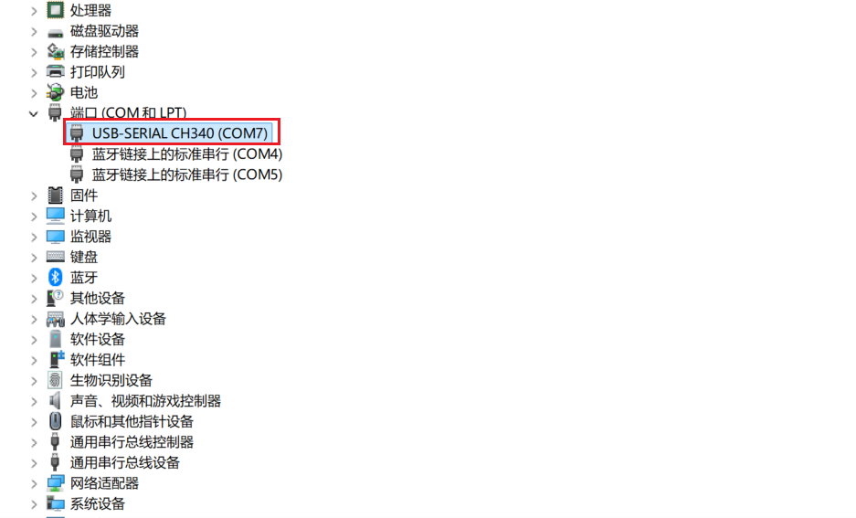
打开HiBurn软件，配置串口波特率为 2000000
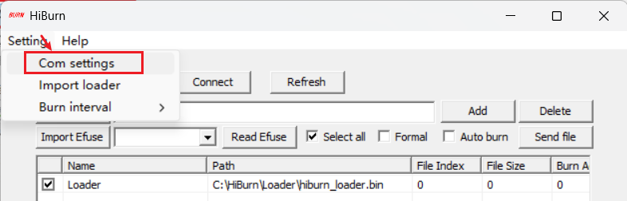
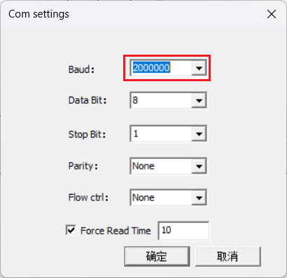
选择自己端口，打开Auto burn选项
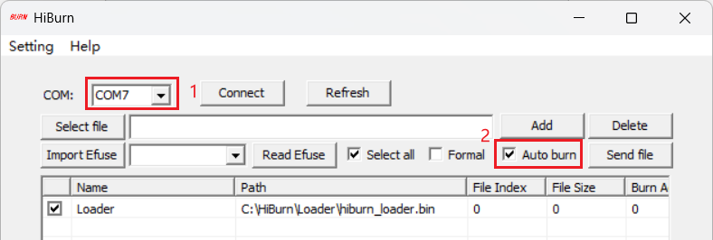
选择虚拟机的待烧录文件，在/home/username/OpenHarmony/3.0.7/out/hispark_pegasus/wifiiot_hispark_pegasus目录找到Hi3861_wifiiot_app_allinone.bin文件
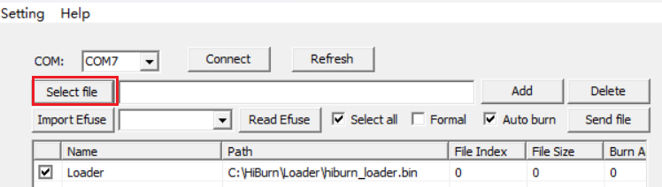
\\加上你的虚拟机IP地址即可选择虚拟机的文件烧录（下图有些错误，以说明为准）
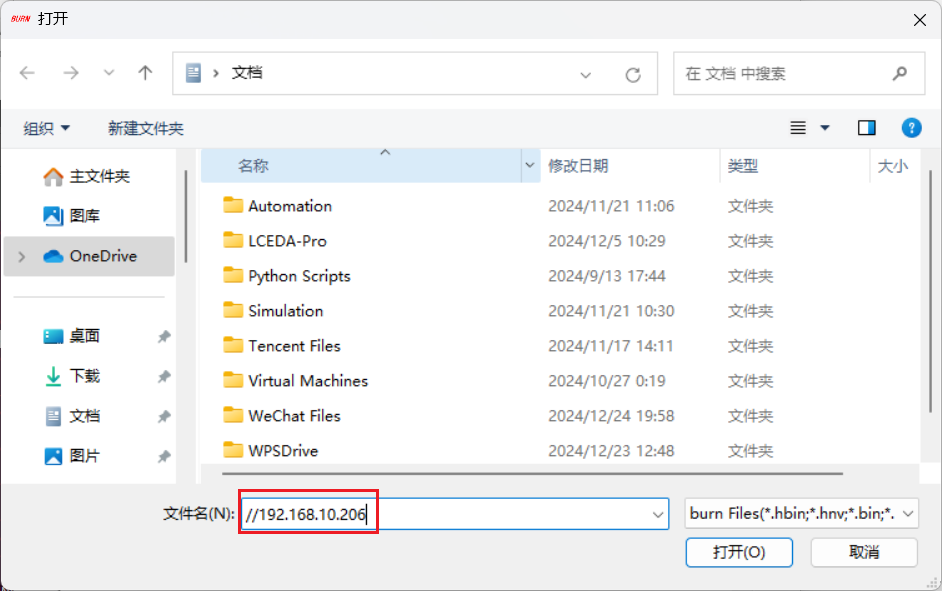
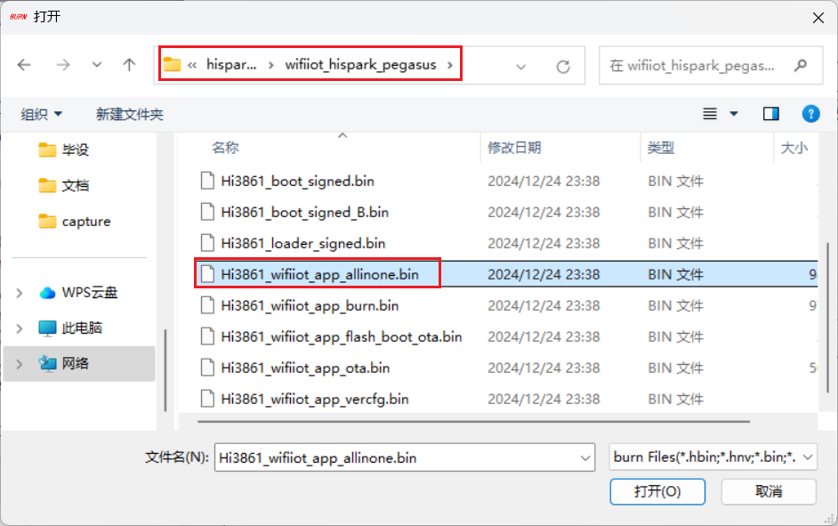
点击Connect，然后输出框出现“Connecting...”，点击开发板的复位按键烧录开始
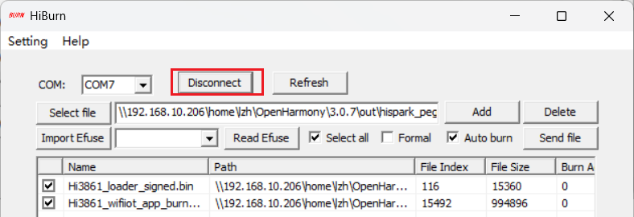
烧录成功
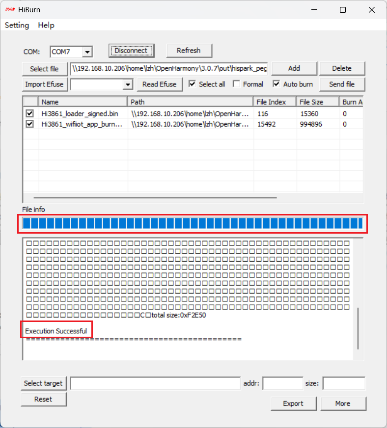
1.6.4 查看输出¶
安装串口和ssh软件MobaXterm，MobaXterm安装介绍，然后打开一个串口界面，复位即可看到输出内容。
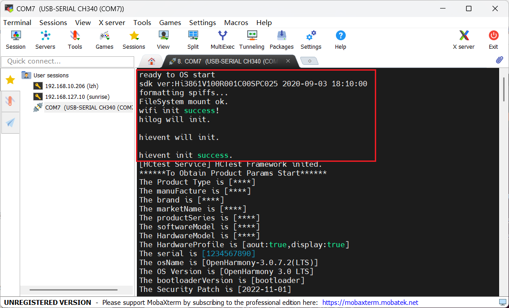
1.7 关闭默认测试输出¶
串口查看输出有很多测试信息，我们可以选择关闭，删除源码中vendor\hisilicon\hispark_pegasus\config.json的如下内容，然后hb build -f编译烧录。

1.8 AT命令联网¶
不要有多余的空格，否则容易错误
AT+STARTSTA # 启动STA模式
AT+SCAN # 扫描周边AP
AT+SCANRESULT # 显示扫描结果
AT+CONN="pi",,2,"123456789" # 连接指定AP，替换热点名称与密码即可
AT+STASTAT # 查看连接结果
AT+DHCP=wlan0,1 # 通过DHCP向AP请求wlan0的IP地址
AT+IFCFG # 查看开发板的IP地址
AT+PING=www.baidu.com1.9 一些便捷使用脚本¶
说明：脚本非本人所写，而是在购买了《OpenHarmony轻量设备开发理论与实践》以后在配套资料中所得，希望可以帮助到阅读到此文档的开源鸿蒙学习者。为不侵占图书利益，网盘中仅存有两个便捷脚本，更多好用资源鼓励大家购买图书支持，网盘内容若有侵权请联系删除。
链接: https://pan.baidu.com/s/1o-FyN4wB-fxVT8XxQ5zhlQ?pwd=hj55
提取码: hj551.9.1 快速联网脚本¶
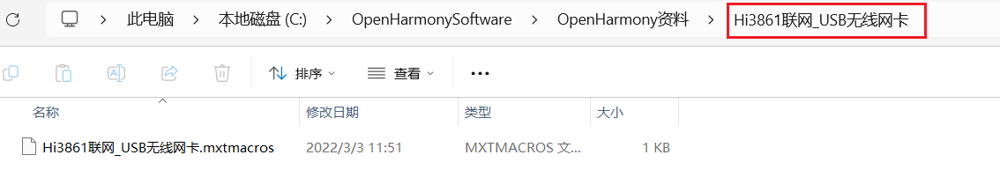
打开MobaXterm，右击添加脚本，并修改热点信息
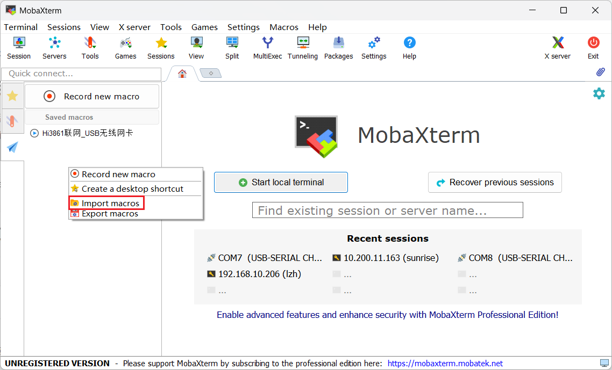
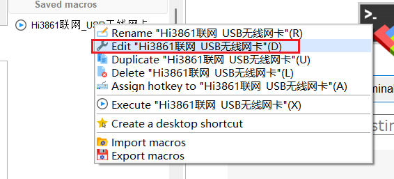
1.9.2 快速烧录¶
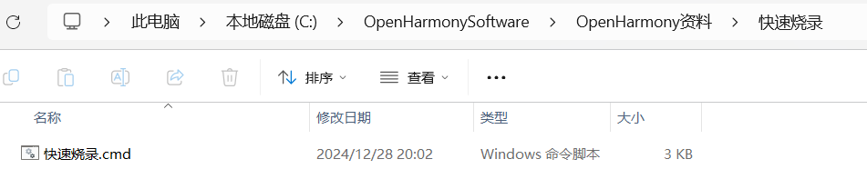
文本编辑打开修改HiBurn.exe、串口号、虚拟机IP、虚拟机文件地址，双击即可完成烧录，无需来回点击HiBurn配置参数（切记先断开MobaXterm串口）
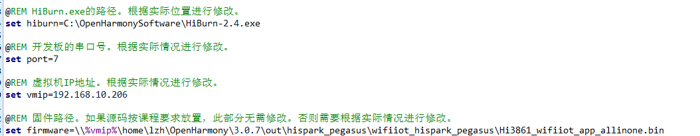
错误解析¶
更换介质：请把标有
“Ubuntu 20.04.6 LTS _Focal Fossa_ - Release amd64 (20230316)”
的盘片插入驱动器“/cdrom/”再按「回车」键# 打开sources.list
sudo nano /etc/apt/sources.list注释第一行
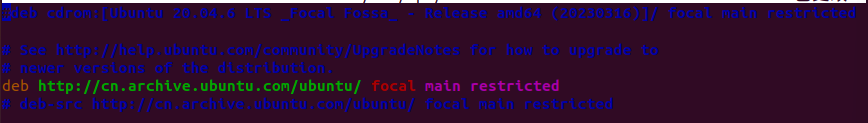